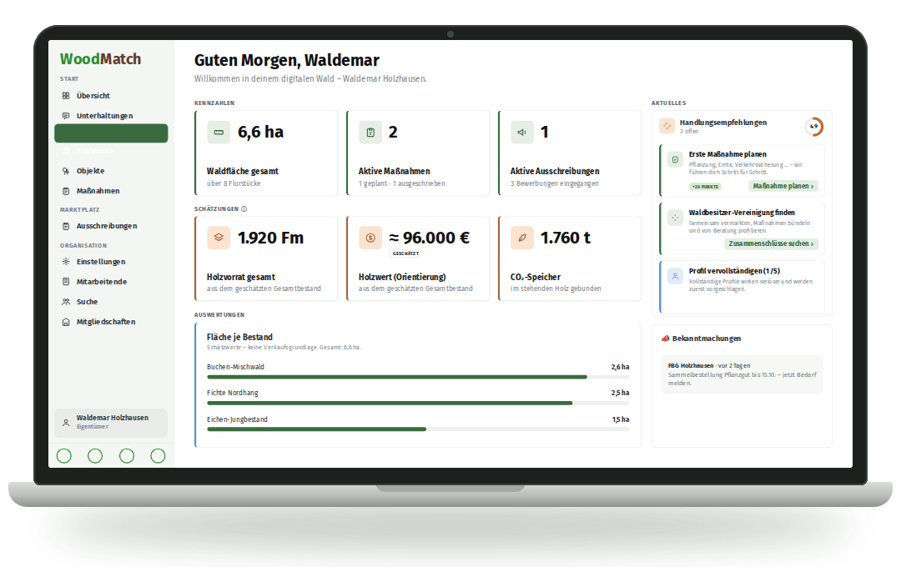

<!DOCTYPE html>
<html lang="de"><head><meta charset="UTF-8"><title>Post 1 – Comeback</title>
<link rel="stylesheet" href="shared.css">
<style>
  #stage { background: var(--paper); }
  .kick { color: var(--green); }
  .lap { position: absolute; left: 0; top: 520px; width: 1080px; }
  .feat { display: flex; align-items: center; gap: 22px; font-size: 40px; font-weight: 700; padding: 16px 0; }
  .feat i { width: 58px; height: 58px; border-radius: 16px; background: #e2f2e1; display: grid; place-items: center; font-style: normal; flex: none; }
  .dots { position: absolute; left: 90px; display: flex; gap: 22px; }
  .dots span { width: 26px; height: 26px; border-radius: 50%; background: var(--mint); }
</style></head>
<body><div id="stage"></div>
<script src="shared.js"></script>
<script>
const N = 4, WW = N * W;
const C = '<svg width="38" height="38" viewBox="0 0 24 24" fill="none" stroke="#2d8d31" stroke-width="3.4" stroke-linecap="round" stroke-linejoin="round"><path d="M5 12.5l4.5 4.5L19 7"/></svg>';
const bg =
  `<div class="abs" style="left:0;top:0;width:${W}px;height:1350px;background:var(--forest)"></div>` +
  topoSVG(WW, 41, '#2d8d31', .12) +
  forestSVG(WW, 12, [
    { y: 1250, hill: 50, step: 75, scale: .7, spruce: .6, tree: '#cfe3c6', ground: '#cfe3c6' },
    { y: 1310, hill: 30, step: 60, scale: .85, spruce: .6, tree: '#9cc79a', ground: '#9cc79a' },
    { y: 1350, hill: 20, step: 55, scale: .95, spruce: .6, tree: '#2d8d31', ground: '#2d8d31' },
  ]);

const slides = [
  // 1 – Stille (dunkel)
  `<div class="kick" style="color:var(--mint)"><i></i>Lange nichts gehört?</div>
   <div class="h" style="top:230px;font-size:132px;color:#fff">Es war still bei uns.</div>
   <div class="h" style="top:540px;font-size:92px;color:var(--mint)">Aus gutem Grund.</div>
   <div class="dots" style="top:720px"><span></span><span style="opacity:.6"></span><span style="opacity:.3"></span></div>
   <div class="swipe" style="background:var(--mint);color:var(--deep);bottom:220px;left:90px;right:auto">Wischen →</div>`,
  // 2 – Hintergrund
  `<div class="kick"><i></i>Hinter den Kulissen</div>
   <div class="h" style="top:200px;font-size:104px">Wir haben im Hintergrund <span style="color:var(--green)">gearbeitet.</span></div>
   <div class="p" style="top:560px;color:var(--muted)">Zugehört, getüftelt, verworfen und neu gebaut. Mit einem Ziel:</div>
   <div class="card" style="left:90px;top:760px;width:900px;padding:48px 54px">
     <div style="font-size:50px;font-weight:800;line-height:1.2">Privatwald so einfach machen, dass <span style="color:var(--green)">jeder</span> den Überblick behält.</div></div>`,
  // 3 – Ergebnis
  `<div class="kick"><i></i>Das Ergebnis</div>
   <div class="h" style="top:200px;font-size:96px">Dein Wald. <span style="color:var(--green)">Auf einen Blick.</span></div>
   <div class="p" style="top:410px;color:var(--muted)">Flurnummer eingeben, Wald sehen – kostenlos.</div>
   `,
  // 4 – CTA
  `<div class="logo abs" style="left:90px;top:100px;font-size:56px"><span class="w">Wood</span><span class="m">Match</span></div>
   <div class="h" style="top:200px;font-size:84px">Ab jetzt geht's hier <span style="color:var(--green)">regelmäßig</span> weiter.</div>
   <div class="abs" style="left:90px;top:440px;right:90px">
     <div class="feat"><i>${C}</i>Tipps rund um deinen Wald</div>
     <div class="feat"><i>${C}</i>Neues aus der Plattform</div>
     <div class="feat"><i>${C}</i>Wissen zu Holz, Pflege & Förderung</div>
   </div>
   <div class="btn" style="position:absolute;left:90px;top:860px;width:560px;height:110px;font-size:42px">Kostenlos starten →</div>
   <div class="abs" style="left:680px;top:892px;font-size:34px;font-weight:700">app.woodmatch.de</div>`,
];
buildStage(N, bg, slides);
window.ready = document.fonts.ready.then(() => Promise.all([...document.images].map(i => i.decode().catch(() => {}))));
</script></body></html>
